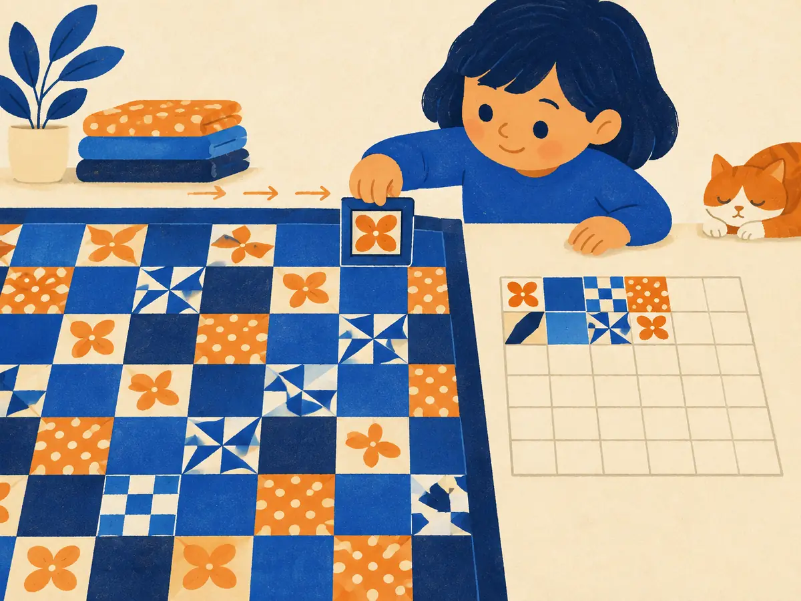

Convolution
Slide a small pattern-detector across a signal or an image, and at every position multiply and add. That one operation, convolution, powers CNNs, the U-Nets inside diffusion models, the front ends of speech models and the audio codecs behind voice AI. It's also the step from "a sound wave" to "a spectrogram" in the next lesson.
By the end you can
- Compute a 1D and a 2D convolution by hand, with stride and padding, and predict the output size.
- Explain what kernels like a moving average or an edge detector do.
- Explain parameter sharing and translation equivariance, and why deep-learning "convolution" is really cross-correlation.
Take your best guess. Being wrong now helps the right answer stick later.
You slide a 3-wide window along a row of 10 numbers, one step at a time, never letting it hang off either end. How many positions does it visit?
- 10
- 7
- 8
- 3
At every position you replace the middle number by the average of the three numbers in the window. What happens to a noisy, jagged signal?
- It gets smoother
- It gets more jagged
- It gets shifted to the right
- Nothing changes
Slide, multiply, add
In 1959 David Hubel and Torsten Wiesel recorded single neurons in a cat's visual cortex and found cells that fire for an edge at one particular angle, in one small patch of the visual field. Kunihiko Fukushima's Neocognitron (1980) copied the idea in a machine: many small, identical detectors tiled across the image. Yann LeCun and colleagues trained such a network with backpropagation to read handwritten zip codes in 1989, which grew into LeNet-5 (1998) and, scaled up on GPUs, AlexNet (2012).
The problem it solved: connecting every pixel to every unit in the next layer is enormous, and it ignores two facts about images. Nearby pixels belong together, and a cat is a cat wherever it appears. A convolution uses one small set of weights, the kernel (or filter), and slides it across the input. In 1D, with a kernel of length $k$:
$$y[i] = \sum_{j=0}^{k-1} w[j]\;x[i + j]$$$x$ is the input, $w$ the kernel, and $y[i]$ the output at position $i$: line the kernel up with inputs $i$ to $i + k - 1$, multiply pairs, add. Each output is a dot product (P1.1) between the kernel and one window of the input.
$x = [1, 2, 3, 4]$ and $w = [1, -1]$, using $y[i] = \sum_j w[j]\,x[i+j]$ with no padding. What is $y$?
- $[1, 1, 1]$
- $[-1, -1, -1]$
- $[3, 5, 7]$
- $[-1, -1, -1, 4]$
Kernels are feature detectors
The kernel decides what the convolution "looks for". Two families cover most of the intuition:
- Smoothing kernels have positive weights that sum to 1, like the moving average $[\tfrac13, \tfrac13, \tfrac13]$ or the blur $[\tfrac14, \tfrac12, \tfrac14]$. Summing to 1 keeps a flat signal at the same level; spreading the weight averages away quick wiggles.
- Difference kernels have weights that sum to 0, like $[-1, 0, 1]$. On a flat stretch they output exactly 0; where the signal changes, they respond, with the sign telling you up or down. They are edge detectors.
A trained network doesn't use hand-picked kernels. It learns them with gradient descent, and the first layer of an image CNN reliably ends up with edge-like and colour-blob detectors not unlike Hubel and Wiesel's cells.
A naming wrinkle. In mathematics and signal processing, convolution flips the kernel before sliding it:
$$(x * w)[i] = \sum_j x[j]\;w[i - j]$$What deep-learning libraries compute, and call "convolution", is the unflipped version above, which mathematicians call cross-correlation. PyTorch's nn.Conv2d doesn't flip; NumPy's np.convolve does. So np.convolve([2, 2, 2, 6, 6, 6, 2, 2], [-1, 0, 1], 'valid') returns $[0, -4, -4, 0, 4, 4]$, the animation's answer with the sign flipped. For learning it makes no difference: a network that needs the flipped kernel simply learns the flipped weights.
True convolution also turns up in probability. If $X$ and $Y$ are independent, the distribution of $X + Y$ is the convolution of their distributions: $P(X + Y = s) = \sum_j P(X = j)\,P(Y = s - j)$, which is how you get the triangle-shaped odds for the sum of two dice. Convolve two Gaussians and you get a Gaussian whose variances add, the rule from P5.1.
Worked example
Moving average $w = [\tfrac13, \tfrac13, \tfrac13]$ on $x = [3, 6, 9, 3]$:
- $y[0] = \tfrac13(3 + 6 + 9) = 6$
- $y[1] = \tfrac13(6 + 9 + 3) = 6$
- Two outputs ($4 - 3 + 1$), both 6: the jagged 3, 6, 9, 3 has been smoothed to its local average.
You apply the kernel $[-1, 0, 1]$ to a signal that is constant, $[5, 5, 5, 5, 5]$. What comes out?
- $[5, 5, 5]$
- $[10, 10, 10]$
- $[-5, 0, 5]$
- $[0, 0, 0]$
2D convolution on a tiny image
Images are grids, so the kernel becomes a small grid too, sliding across and down:
$$Y[r, c] = \sum_{i=0}^{k-1}\sum_{j=0}^{k-1} W[i, j]\;X[r + i,\, c + j]$$Line the $k \times k$ kernel $W$ up with the patch whose top-left corner is pixel $(r, c)$, multiply the $k^2$ overlapping pairs, add. The output grid is called a feature map.
Real images have channels: red, green and blue. A kernel then spans all input channels, $k \times k \times C_\text{in}$ weights, and still produces one number per position. A convolutional layer runs $C_\text{out}$ different kernels side by side, giving $C_\text{out}$ feature maps, plus one bias per output channel:
$$\text{parameters} = k \cdot k \cdot C_\text{in} \cdot C_\text{out} + C_\text{out}$$For a first layer with 3×3 kernels turning RGB into 64 channels: $3 \cdot 3 \cdot 3 \cdot 64 + 64 = 1{,}792$ parameters, whatever the image size.
Explain like I'm 5

A child has a big patterned quilt and a small square magnifying glass. They put the glass in the top corner, look for one thing (say, "is there a line going up and down here?") and write the answer in a little notebook grid.
Then they slide the glass one square along and ask the same question again, row after row, until the whole quilt is done. The notebook grid ends up smaller than the quilt, and it shows where the up-and-down lines are.
Where it breaks: the real "question" is a set of numbers to multiply and add, not a yes or no, and a network asks many different questions at once, one per kernel, and learns them itself.
A layer applies 3×3 kernels to a 64-channel input and produces 128 channels. How many parameters does it have (with biases)?
- $3 \cdot 3 \cdot 128 = 1{,}152$
- $64 \cdot 128 = 8{,}192$
- $3 \cdot 3 \cdot 64 \cdot 128 + 128 = 73{,}856$
- It depends on the image size
Stride, padding and output size
Two knobs control the output's size. Padding $p$ adds $p$ zeros around the border, so the kernel can sit over the edge pixels. Stride $s$ moves the kernel $s$ places at a time instead of 1, which downsamples. For an input of length $n$ and a kernel of size $k$:
$$n_\text{out} = \left\lfloor \frac{n + 2p - k}{s} \right\rfloor + 1$$$n + 2p$ is the padded length; subtracting $k$ and adding 1 counts the positions with stride 1; dividing by $s$ (rounding down, $\lfloor\cdot\rfloor$) keeps every $s$-th one. In 2D, apply it to height and width separately. With $s = 1$, choosing $p = (k - 1)/2$ keeps the size unchanged ("same" padding): a 3×3 kernel with $p = 1$ maps 32×32 to 32×32.
Worked example
The first layer of a ResNet takes a 224×224 image with a 7×7 kernel, stride 2 and padding 3:
- Padded length: $224 + 2 \times 3 = 230$.
- $230 - 7 = 223$, and $223 / 2 = 111.5$, rounded down to 111.
- $111 + 1 = 112$: the output is 112×112. Stride 2 halved each side.
Your turn (faded example)
- $n = 32$, $k = 3$, $p = 1$, $s = 2$. Output size:
- LeNet-5's first layer: $n = 32$, $k = 5$, $p = 0$, $s = 1$. Output size:
- The animation's stride step: $n = 8$, $k = 3$, $p = 0$, $s = 2$. Output size:
Why it works so well. Two properties make convolution the right tool for images and sound:
- Parameter sharing. The same kernel is used at every position. A dense layer from a 224×224×3 image to a 224×224×64 output would need about $150{,}528 \times 3{,}211{,}264 \approx 4.8 \times 10^{11}$ weights; the 3×3 convolution above needs 1,792.
- Translation equivariance. Shift the input and the output shifts the same way (exactly, with stride 1 and away from the borders), as the last step of the 2D animation showed. A detector learned for a cat's ear in one corner works in every corner. Pooling and striding later add rough invariance (P6.1).
A 3×3 convolution with stride 1 and padding 1 is applied to a 64×64 image. What size is the output?
- 64×64
- 62×62
- 32×32
- 66×66
Why does a convolutional layer need so few parameters compared with a dense layer, and what does it gain besides?
Input 64×64, kernel 3×3, padding 1, stride 2. What's the output size?
- 31×31
- 32×32
- 33×33
- 62×62
Why don't deep-learning libraries bother flipping the kernel, as true convolution requires?
- Flipping is too slow on GPUs
- Flipping only matters in 2D, never in 1D
- The kernel is learned, so the network simply learns the flipped weights if it needs them
- Cross-correlation and convolution always give identical results
The 2D animation's edge moved one pixel right and the bright output columns moved one right too. What property is that?
- Translation equivariance
- Translation invariance
- Parameter sharing
- Padding
(From P1.2) A 1D convolution is linear, so it can be written as $y = Wx$ for some matrix $W$. What does that matrix look like?
- A dense matrix of independent learned weights
- The identity matrix
- A diagonal matrix holding the kernel
- A banded matrix: each row holds the same kernel, shifted one column to the right of the row above, with zeros elsewhere
Key takeaways
- Convolution slides a small kernel over the input; each output is a dot product with one window: $y[i] = \sum_j w[j]\,x[i+j]$.
- Smoothing kernels (weights sum to 1) blur; difference kernels (sum to 0) detect edges.
- Output size: $\lfloor (n + 2p - k)/s \rfloor + 1$. Padding preserves size; stride downsamples.
- Deep-learning "convolution" is cross-correlation (no flip); with learned kernels it doesn't matter.
- Parameter sharing keeps layers small and gives translation equivariance.
About 20 minutes: implement 1D convolution and check it against np.convolve, code the output-size formula, write a 2D convolution, and edge-detect a tiny synthetic image. Runs free in your browser; nothing to install.
Adding cards schedules your first spaced review.